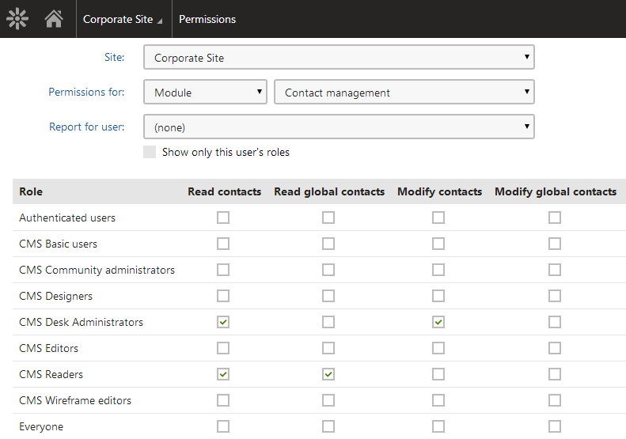
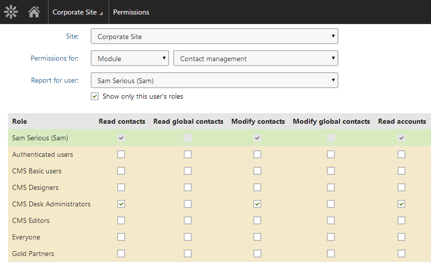

Configuring permissions
Permissions provide a way to control access to particular sections of the administration interface (applications), pages in the content tree and custom tables.
Assigning permissions
You can assign permissions in the Permissions application. Permissions can be assigned only to roles, not to individual users.
In addition to global roles defined for all sites in the system, every website has its own set of roles. Permissions are assigned to these roles, which means that every website can use a different configuration of role permissions as necessary.
Site
Using the Site drop-down list, select a site whose roles you want to configure the permissions for. After you select a site, the available roles appear in a list below.
Permissions for
Using the first Permission for drop-down list, you can choose from the following three types of permissions:
Modules – permissions for actions related to specific Kentico features.
Page types – permissions applied to all pages of a particular type. These permissions represent one level of the three-level page permissions hierarchy, as described in Configuring page permissions.
Custom tables – permissions for custom tables.
Then you can select the appropriate module, page type or custom table from the second drop-down list and grant the permissions to roles using the check-boxes.

The permission matrix for the Contact management module
If you do not have the global administrator privilege level, you may come across grayed-out check boxes:
Selected grayed-out check-box – the permission is granted to the role, and only global administrators can change it.
Cleared grayed-out check-box – the permission is not granted to the role, and only global administrators can change it.
These grayed-out check-boxes are also accompanied by a warning icon ( ) in the header row of the table, indicating that the permission can only be granted to roles by global administrators.
Report for user
As permissions are assigned to roles, not directly to users, it is possible to display a permission report for each website user using the Report for user drop-down list. The system displays a sum of all permissions granted to the user's roles highlighted in green color. Roles where the selected user is a member are highlighted in yellow color.
If you enable the Show only this user's roles check-box, only the yellow roles will be displayed in the matrix.

Permission matrix for the selected user
Permission-related settings for users
When editing users in the Users application, you can set the Privilege level. The privilege level provides an additional security layer and affects how the system checks permissions:
|
Privilege level |
Description |
|
None |
The user cannot access the system's administration interface. Ability to view pages and perform actions on the live site depends on the site's security options and the roles assigned to the user. |
|
Editor |
The user can access the administration interface and on-site editing mode for all sites assigned on the Sites tab. The Editor privilege level does not grant any permissions – it only differentiates between site editors and registered users who are limited to the live website. To allow editors to access applications and perform actions, you need to assign roles. |
|
Administrator |
The user has unrestricted access to non-global applications for all sites in the system (administrators skip permission and UI personalization checks). However, administrators CANNOT:
|
|
Global administrator |
The user has full access to all parts of the system for all sites, and can perform any operations (regardless of permissions or other settings). Global administrators are the only users who have full access to all global applications. |